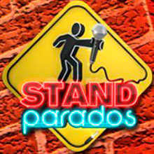

Por favor confirma tu voto a
confirmar
cancelar
Mejor Programa de TV de Paga
Luis de Llano y Marco Flavio Cruz
Su Sana Adicción
Yordi Rosado
Está cañón con Yordi Rosado
Raquel Rocha
MoJoe

Adal Ramones
Stand Parados